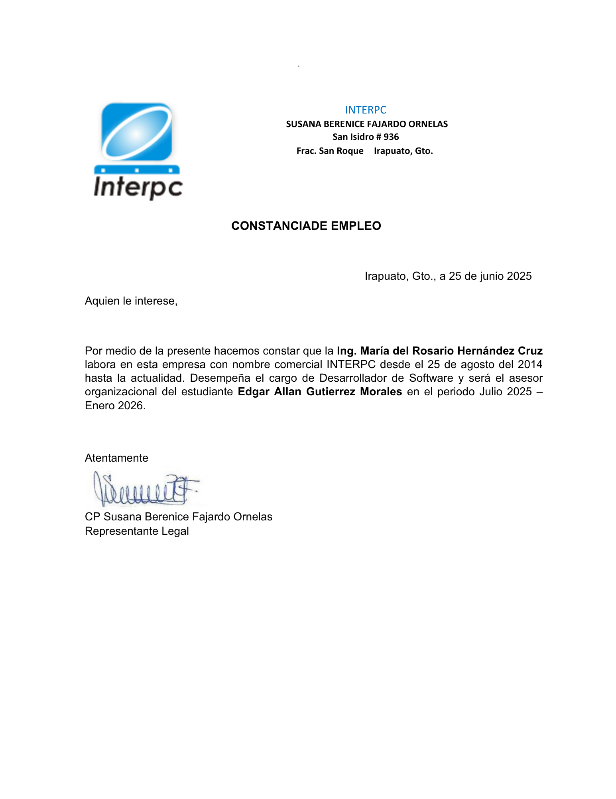
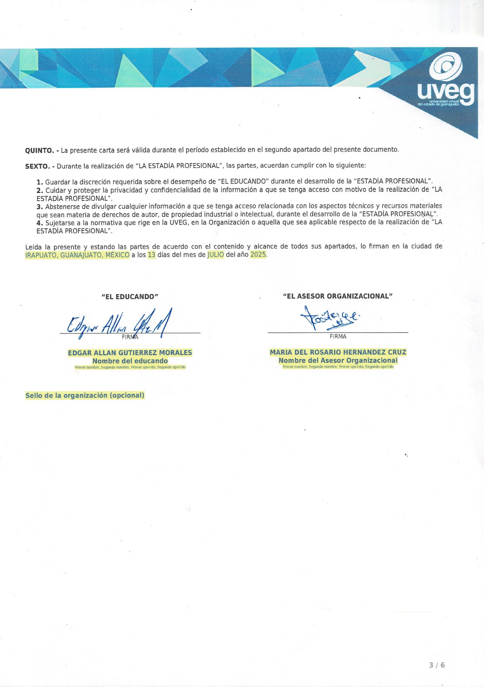
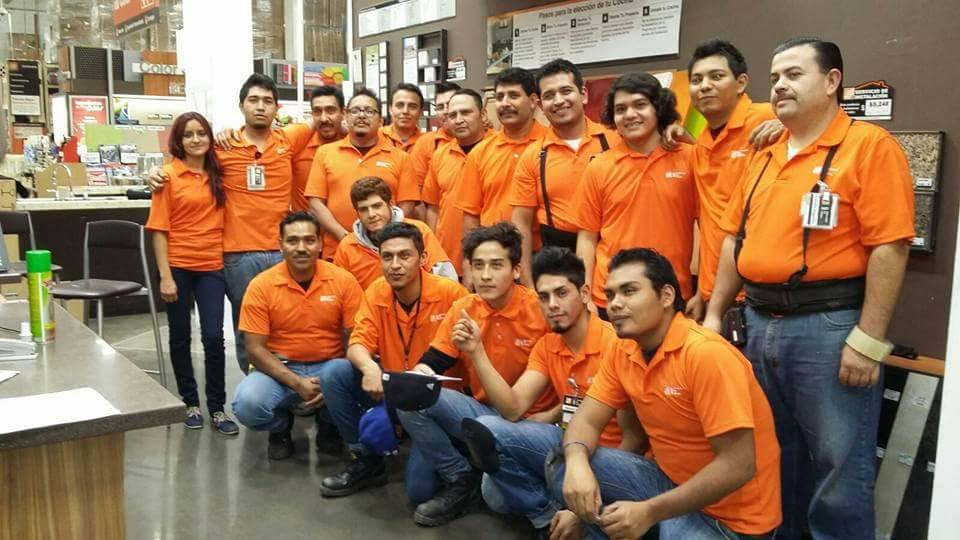
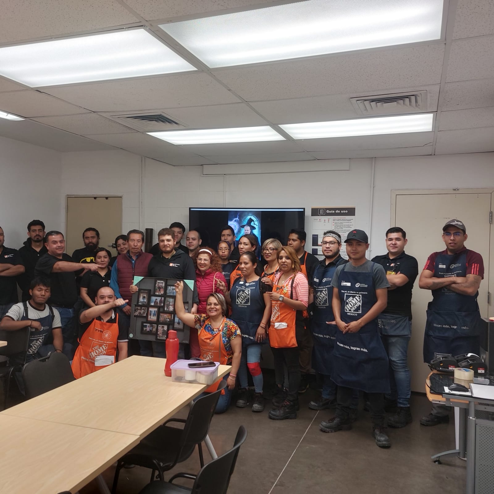
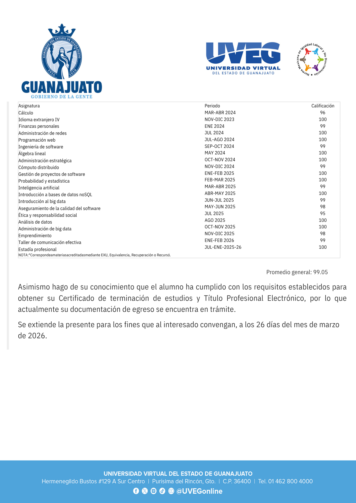
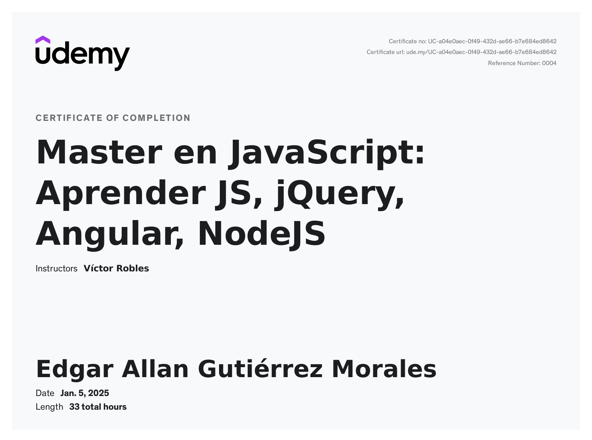
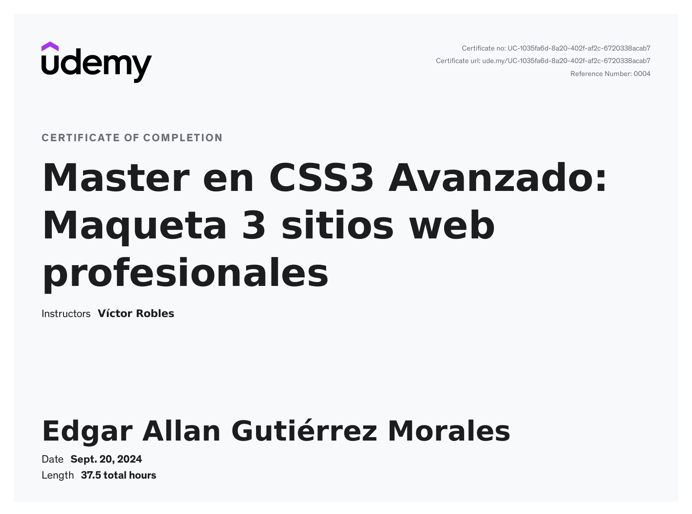
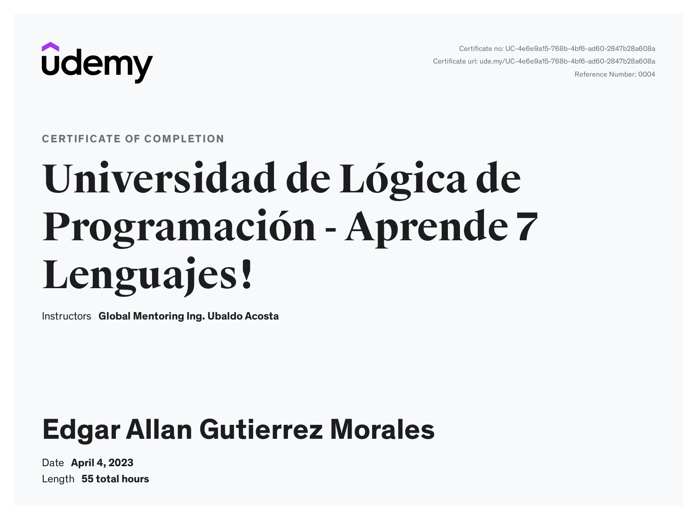
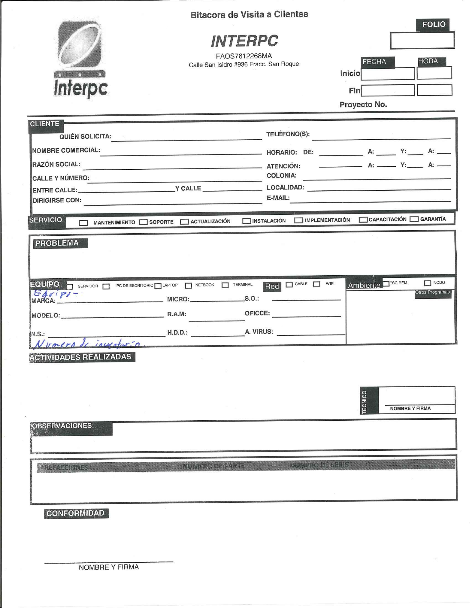

Experiencia Laboral
Acerca de mi
Con respecto al ámbito laboral, me considero una persona enfocada al cumplimiento de objetivos, considero a mis compañeros y los apoyo en cuanto al trabajo en equipo, respeto las horas de entrada del trabajo demostrando puntualidad, finalmente, iniciativa en la resolución de problemas.
Areas de conocimiento
Poseo bases sólidas en programación y desarrollo de aplicaciones, he logrado crear proyectos con herramientas como: HTML, CSS, JavaScript, PHP, AJAX (comunicación asíncrona cliente-servidor), bases de datos relacionales (SQL Server de Microsoft y MySQL), Node.js y Socket.io.
- Creación de interfaz y funcionalidades del lado del cliente (Frontend): Aplico la metodología BEM para la identificación de elementos HTML y sus posteriores referencias en archivos de estilos en cascada (CSS), evitando anidación de estilos y tener un formato de código más limpio. He trabajado en implementaciones de elementos interactivos en interfaces de usuario gestionando eventos en JavaScript y su librería JQuery.
- Conexión a base de datos y validación de datos en el lado del servidor (Backend): He realizado conexiones a bases de datos con el ORM (Object-Relational Mapping) Sequelize en Node.js, un entorno del lado del servidor de JavaScript, en ese mismo entorno implementé interacción en tiempo real del usuario con la base de datos gracias al módulo Socket.io, también he trabajado con PHP utilizando las extensiones sqlsrv y pdo_sqlsrv en cuanto al gestor SQL Server, he aplicado métodos en el backend para validar los datos que envía el cliente con el fin de evitar inyecciones de scripts maliciosos a la base de datos, en PHP he podido implementar un api para que el cliente pueda consultar información de la base de datos y se muestre en la interfaz (sin necesidad de refrescar la página) gracias a la comunicación asíncrona cliente-servidor con AJAX.
- Respaldo de código fuente con git y publicación de repositorios en Github: He podido generar copias de seguridad de mis proyectos en local gracias a git, crear ramas para experimentar funcionalidades dejando el proyecto en su estado funcional en la rama principal, efectuando un merge si el resultado de la experimentación es apta para integrarse en la rama principal. también he hecho exportaciones de mis trabajos en local a mi cuenta de GitHub.
- Creción de contenedores con Docker: He podido aprovechar la portabilidad que ofrece Docker para poder mostrar mis proyectos de aplicaciones web dinámicas, los interesados no tendrán que instalar todas las dependencias que necesitan estas aplicaciones, solo es cuestión de que tengan Docker desktop instalado, los archivos necesarios publicados en mi cuenta de Github y aplicar en la ruta de esos archivos el comando docker-compose up y listo.
Servicio social en Interpc
Del al
Interpc fue la empresa que me dio la oportunidad de ejercer mi servicio social, se dio la casualidad de que un cliente requería una pantalla en su local similar al de instituciones como los bancos, mostrar tickets de pedidos de los comensales, me dieron la oportunidad de explorar la posible solución del requerimiento del cliente el cual había contratado un servicio producto de Intepc llamado Softappetit, debido a que era un practicante, no se me dio acceso al código fuente de ese sistema, me di a la tarea de explorar la solución en un entorno de prueba con Node.js, gracias a eso se logró desarrollar una demo de pantalla de tickets de pedidos utilizando la tecnología de los sockets, el equipo de desarrollo se encargó de adaptar la lógica implementada en los sockets de Node.js al código fuente de Softappetit, el resultado fue diferente a lo que había hecho sin embargo, se cumplió el propósito de poder aportar una solución al requerimiento del cliente.
Dentro de la empresa Interpc tenían una necesidad de digitalizar el proceso de bitácoras de visita a clientes, de ahí nació el proyecto del Sistema de Ordenes de Servicio (SOS), se logró crear una aplicación web personalizada para Interpc donde se puede crear, consultar y actualizar bitácoras (la eliminación de registros se descartó optando mejor por implementar un "switch" cambiando entre una de estas dos opciones: "Activar/Desactivar" los cuales determinan la visibilidad de los registros en la aplicación). La aplicación también posee un acceso restringido implementando un login y dos tipos de usuarios: "técnicos" y "administradores", los técnicos (y también los administradores) pueden generar sus firmas en la aplicación, así como recabar las firmas de los clientes de acuerdo a sus respectivas bitácoras de servicio, solo los administradores pueden actualizar registros, crear usuarios y determinar la visibilidad de los registros, así como generar PDF de reportes de dispositivos pertenecientes a una empresa en concreto y la cereza del pastel, PDFs de las bitácoras con las firmas de los técnicos y el cliente en cuestión.


Asociado en Mercadeo en Tienda (MET) en Home Depot
Del al
A pesar de no haber sido un trabajo del sector TI, dentro del equipo MET en Home Depot aprendí del trabajo colaborativo y actividades misceláneas, pasando por dar mantenimiento a estanterías de la tienda, cambiar exhibiciones haciendo uso de herramientas como taladros y llaves españolas, y finalmente una de mis actividades favoritas, hacer uso del montacargas para bajar tarimas a mis compañeros y tarimas también para mis actividades de surtido, llegué a usar el montacargas todos los días durante 4 años y medio llegando a dominar el montacargas eléctrico de operador de pie, surtir pisos era una de las actividades que requería precisión ya que el espacio en las estanterías para meter tarimas de piso es muy reducido y los pasillos estrechos debido a las puertas de exhibiciones, esa actividad demandaba mucho cuidado y rapidez, y ni hablemos del legendario pasillo 29, el más estrecho de la tienda 8777 sin duda, a duras penas el montacargas cabe de forma horizontal ahí, aparte de que las tarimas de igual forma estaban subidas de forma horizontal lo que significaba que las uñas tenían que ser insertadas en huecos muy estrechos y una separación entre si con una medida muy exacta, ese pasillo es el turbo tunnel del montacarguista de la tienda 8777 si me lo preguntan. Debido a mis habilidades en el montacargas trabajé mucho tiempo en el área de materiales, donde bajar tarimas de puertas y consolidados de triplay era una actividad de mucha precisión y cuidado, un movimiento brusco o si las uñas no estan bien centradas podría significar la caída de la tarima causando un desastre en todo el departamento, afortunadamente nunca llegué a pasar por eso. Trabajar en Home Depot fue una experiencia interesante y una parte importante de mi vida.


Formación
Universidad Virtual del Estado de Guanajuato (UVEG)
Del al
La UVEG es una universidad pública cuyo plan educativo ofrece flexibilidad para personas que también trabajan y quieran retomar sus estudios, esta institución educativa me permitió estudiar a la vez de trabajar en Home Depot hasta que me tocó cursar la estadía profesional, no hay un tiempo estricto para cursar materias como en un formato tradicional de universidad, en vez de eso, se paga el acceso a materias de manera mensual, el máximo son dos materias al mes, por supuesto al tramitar dos materias a la vez se termina la carrera mucho antes del tiempo estimado, en mi caso, en todo el ciclo escolar tomé una materia al mes, una por el compromiso de mi trabajo en Home Depot y por el otro esto me ayudó a poder procesar el material de estudio con más profundidad, a pesar de que hay flexibilidad en el tiempo que uno decide tomar materias, la UVEG tiene un limite de tiempo de 8 años.
Cursé la licenciatura de Ingeniería en Sistemas Computacionales, en esta licenciatura vi fundamentos de redes y de programación, aparte de algebra relacional y lógica booleana en la materia de matemáticas discretas, conceptos muy importantes en fundamentos de programación y bases de datos SQL respectivamente, dentro del plan de estudios cursé la especialidad del Big data donde se vio fundamentos en desarrollo web, bases de datos NoSQL y el análisis de datos estadísticos con ayuda de lenguajes de programación como Python y R.

Curso de PHP - Víctor Robles Web
El curso me está ayudando a aprender PHP en profundidad, tanto en programación estructurada como programación orientada a objetos, aplicando también patrones de arquitectura como el Modelo-Vista-Controlador (MVC) el cual fue utilizado para crear el sistema de ordenes de servicio de mi portafolio.
Da click aqui para ver el curso
Curso de JavaScript - Víctor Robles Web
En este curso se ven temas como dotar de funcionalidades a elementos html con JavaScript y su librería JQuery, también se ve JavaScript en el lado del servidor con Node.js y frontend básico con el framework de Angular.

Curso Maquetación web - Víctor Robles Web
El curso me ayudó a poder maquetar páginas web usando la metodología BEM (Block, Element, Modifier) que permite identificar elementos html con clases y tener archivos css más limpios, también se ven temas como animaciones en css, display flex y grid, css responsivo, aparte de funcionalidades con JavaScript.

Curso Lógica de programación - Global Mentoring
Este curso me sirvió para empaparme de conocimientos en programación antes de cursar la materia de fundamentos de programación de la UVEG, se ve ejercicios de estructuras de control y el manejo de arreglos, primero utilizando pseudolenguaje como PSeInt y finalmente aplicar los fundamentos en 6 lenguajes distintos (C, C++, Java, C#, JavaScript y Python).

Servicio social en Interpc
Pantalla de tickets y creación de pedidos


La demo de la pantalla de Tickets para un cliente de Interpc fue un aporte a la empresa dentro de mi servicio social, se ideó una pantalla principal donde el personal puede crear pedidos anotando el número de comanda y el nombre del cliente en cuestión, en esa misma pantalla se puede cambiar los estatus de los pedidos y el cambio se puede ver en tiempo real, tanto en la interfaz de creación de pedidos como en la pantalla de tickets gracias al modulo Socket.io de Node.js.


También se hizo una simulación del monitor de cocina parecido al que tiene el sistema Softappetit, se vio de qué forma poder integrarlo al mismo canal que la pantalla de tickets y de creación de pedidos, cada registro del monitor de cocina tienen sus propios botones de estatus, el botón "Ordenada" crea un registro de pedido (el cual aparece en la pantalla de capturar pedido) a la vez que se actualiza el estatus del propio registro del monitor de cocina, todo cambio de estatus generado en el monitor de cocina se verá reflejado en la interfaz de captura de pedidos, los estatus "Proceso" y "Terminado" se reflejan también en la pantalla de tickets y estatus "entregado" el registro desaparece de la pantalla de tickets y solo será visible en la interfaz de captura de órdenes.
También se integró una pantalla similar a la pantalla de tickets, pero este está pensado para que otros miembros del personal puedan interactuar con él, en la sección de "Terminado", los tickets tienen un botón en la parte superior derecha, ese botón permite cambiar el estatus del registro del pedido en cuestión a "entregado" haciéndolo desaparecer de las pantallas de los tickets o también en el monitor de cocina si es que se capturó un pedido desde ahí.
El contenido de los contenedores de la aplicación web y base de datos en docker de este proyecto contiene datos de prueba y no representa información sensible de la empresa Interpc y de sus clientes.Sistema de Ordenes de Servicio (SOS)

El sistema de órdenes de servicio se creó para aportar una solución a la generación de bitácoras de visita a clientes en formato físico dentro de la empresa Interpc, se creó en base al patrón de arquitectura modelo-vista-controlador, en donde la toma de contacto del usuario es la vista (interfaz de usuario) y dependiendo de las acciones del usuario en la aplicación, los controladores gestionan la información obtenida de los modelos, esa información obtenida se plasma en las vistas donde el usuario puede visualizarlas. La aplicación web tiene un acceso restringido y se requiere de un administrador para poder crear los usuarios (Técnicos) que son el personal de la empresa, la empresa tiene tres tipos de vistas principales: para administradores, para usuarios (técnicos) y el formulario extendido de una bitácora.


El formulario extendido de una bitácora es visualizado por el usuario cuando este tiene acceso a un registro de bitácora en la sección de "Seguimiento de bitácoras" de la aplicación, en él se escriben los campos "actividades realizadas" y "observaciones" y en esa vista también se tiene acceso al pad de firmas para que los técnicos y los clientes firmen la conformidad de actividades. La vista de usuario es un espacio para que los técnicos puedan insertar registros como contactos de los clientes, el tipo de equipo y los equipos de los clientes para luego crear registros de bitácoras, estos registros de bitácoras tendrán la referencia del id del cliente y el id del técnico que generó el registro, las bitácoras pueden ser de servicio o equipo, si es servicio solo es cuestión de rellenar el campo correspondiente, por el contrario, si es equipo, el registro de la bitácora tendrá como referencia el Id del equipo. También el técnico tiene opciones de seguimiento de bitácoras y la edición de su firma, el administrador también tiene acceso a todo lo anteriormente mencionado.


Por último, tenemos la vista del administrador, a diferencia del usuario donde solo crea registros, consultas y actualizaciones limitadas (seguimiento de bitácoras), en esta vista el administrador puede crear usuarios, reestablecer contraseñas de estos, editar registros de contactos, tipos de equipo, equipos y campos de bitácoras, no se optó en contemplar eliminación de registros, en cambio, los administradores pueden activar o desactivar la visibilidad de estos registros en la aplicación, esta visibilidad también afecta a la vista de usuarios. Finalmente los administradores pueden generar reportes en formato PDF de equipos que posee un cliente y consultar bitácoras con opciones de filtrado, dependiendo del filtro proporcionado se mostrará una tabla con los registros de bitácoras que coincidan con el filtro, cada registro tiene opciones de consulta, edición, generación de PDF y visibilidad.



Cursos
Blog de videojuegos

El blog de videojuegos fue una actividad perteneciente al curso de Víctor Robles "Master en PHP, SQL, POO, MVC, Laravel, Symfony, WordPress +", en el se vio programación estructurada con vanilla PHP. El blog de videojuegos permite insertar usuarios en la barra lateral derecha de la página, se utiliza la extensión sqlsrv para la conexión a la base de datos, los usuarios pueden crear entradas y categorías, editar y eliminar entradas de su propia autoría, sin embargo, no pueden eliminar/editar entradas de otros usuarios, también se implementó una barra de búsqueda donde se muestra registros de entradas que coincidan con el string insertado en la búsqueda.
Tienda online de camisetas

La tienda de camisetas fue una actividad perteneciente al curso de Víctor Robles "Master en PHP, SQL, POO, MVC, Laravel, Symfony, WordPress +", en el se vio programación orientada a objetos y el patrón de arquitectura modelo-vista-controlador con vanilla PHP, Se utiliza la extensión pdo_sqlsrv de PHP para la conexión a la base de datos. la tienda de camisetas permite la creación de usuarios, estos pueden añadir productos al carrito de compra y realizar pedidos, la aplicación detecta si hay una sesión de usuario, si no hay y se quiere hacer un pedido, el sistema notifica al usuario que debe de registrarse primero, en la aplicación hay dos tipos de usuarios: usuarios y administradores, los administradores solo tienen acceso a opciones como crear categorías, editar/eliminar productos y actualizar los estatus de los pedidos.
Proyecto JS

Proyecto JS fue una actividad perteneciente al curso de Víctor Robles "Master en JavaScript: Aprender JS, jQuery, Angular, NodeJS", en él se vio estructuras de control y manejo de arreglos con vanilla JavaScript y el manejo de eventos con la librería JQuery aparte de aplicar dependencias como sliders, acordeones y validaciones de formulario.
Maquetación web 1

Maquetación web 1 fue una actividad perteneciente al curso de Víctor Robles "Master en CSS3 Avanzado", en este curso se ven temas como la aplicación de pseudoelementos como before y after y posicionamientos relativos y absolutos permitiendo introducir assets visuales sin afectar el flujo del documento html, también se ven los display flex y grid, como esto facilita el posicionamiento de elementos del DOM sin tener que preocuparse por los flotados, es en este curso donde se pone en práctica la metodología BEM (Block-Element-Modifier) identificando elementos del DOM y tener archivos css mantenibles ya que cada elemento tiene su propia clase distinguible, finalmente se ve como JavaScript agrega dinamismo al maquetado modificando el contenido de elementos padre y propiedades de estilos de estos elementos del DOM. En maquetación-web-1 se logró crear la interfaz de un portafolio.
Maquetación web 2

Maquetación web 2 fue una actividad perteneciente al curso de Víctor Robles "Master en CSS3 Avanzado", en este curso se ven temas como la aplicación de pseudoelementos como before y after y posicionamientos relativos y absolutos permitiendo introducir assets visuales sin afectar el flujo del documento html, también se ven los display flex y grid, como esto facilita el posicionamiento de elementos del DOM sin tener que preocuparse por los flotados, es en este curso donde se pone en práctica la metodología BEM (Block-Element-Modifier) identificando elementos del DOM y tener archivos css mantenibles ya que cada elemento tiene su propia clase distinguible, finalmente se ve como JavaScript agrega dinamismo al maquetado modificando el contenido de elementos padre y propiedades de estilos de estos elementos del DOM. En maquetación-web-2 se logró crear la interfaz de una pagina de agencia de diseño y desarrollo web, uno de sus aspectos distintivos es el manejo de animaciones en css.
Maquetación web 3

Maquetación web 3 fue una actividad perteneciente al curso de Víctor Robles "Master en CSS3 Avanzado", en este curso se ven temas como la aplicación de pseudoelementos como before y after y posicionamientos relativos y absolutos permitiendo introducir assets visuales sin afectar el flujo del documento html, también se ven los display flex y grid, como esto facilita el posicionamiento de elementos del DOM sin tener que preocuparse por los flotados, es en este curso donde se pone en práctica la metodología BEM (Block-Element-Modifier) identificando elementos del DOM y tener archivos css mantenibles ya que cada elemento tiene su propia clase distinguible, finalmente se ve como JavaScript agrega dinamismo al maquetado modificando el contenido de elementos padre y propiedades de estilos de estos elementos del DOM. En maquetación-web-3 se logró crear la interfaz de una pagina de noticias de videojuegos.